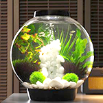
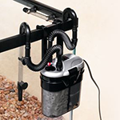
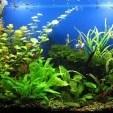
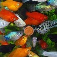

ДОМАШНІЙ АКВАРІУМ
Твій підводний світ
Зазирни у інший світ
Море та океан здавна приваблюють людей, відкриваючи їм зовсім інший світ. Незважаючи на те, що цей світ від нас прихований, він вражає свою різнобарвністю, різноманітністю та незвичністю. Кольорові блискучі рибки та інші підводні мешканці, неймовірні корали, відблиски світла на глибині - багатьом дуже подобається ця атмосфера.
Кожен акваріум – це маленький світ, зі своїми особливостями, традиціями та історією. Зазирніть у нього та дізнаєтеся, як акваріумні рибки прикрашають інтер’єр, допомагають відпочити та отримати більше знань про цей Всесвіт.
АКВАРІУМИ
Акваріуми та комплектуючі
Розведення живності в акваріумі — популярне у світі захоплення.
більшеОБЛАДНАННЯ
Акваріумне обладнання
В кожному акваріумі повинні бути: фільтр, освітлення і обігрівач.
більше
ВИБІР АКВАРІУМА
АКВАРІУМ -НАЙВАЖЛИВІШЕ ПРИДБАНЕ ВАМИ ОБЛАДНАННЯ, ОСКІЛЬКИ ВІН СЛУЖИТИМЕ ВАШИМ РИБАМ ДОМІВКОЮ
Акваріуміст початківець при вигляді різноманіття акваріумів зазвичай губиться і не в змозі відразу вибрати розмір і форму. Звичайно, ваш вибір буде залежати від фінансових можливостей і доступного простору, але при покупці в першу чергу думайте про благополуччя риб. Ніколи не купуйте акваріум лише тому, що він добре виглядає. Для риб найважливіше значення має простір в акваріумі, адже щільність їх населення в неволі завжди перевищує природню. Відповідно, краще всього купляти найбільший акваріум, який дозволяють вам кошти і вільне місце. Звичайно, маленькі акваріуми коштують менше, але це зовсім не означає, що догляд за ними обійдеться вам дешевше.
Дізнатися більшеВИБІР І ПОСЕЛЕННЯ РИБ
ЯКЩО АКВАРІУМ ПОВНІСТЮ ГОТОВИЙ І ВИ ПЕРЕКОНАЛИСЯ, ЩО ВСЕ ПРАЦЮЄ, МОЖНА ПРИСТУПАТИ ДО ПОСЕЛЕННЯ РИБ.
Хоча ви можете замовити риб з доставкою додому, краще все-таки відвідати магазин, щоб побачити риб своїми очима, особливо якщо ви новачок. Попросіть досвідчених акваріумістів порекомендувати вам магазин-бажано приналежний до шанованої торгової фірми. Такі магазини зазвичай проводять навчання своїх співробітників, тому ви маєте більше шансів отримати професійну пораду.
Дізнатися більше